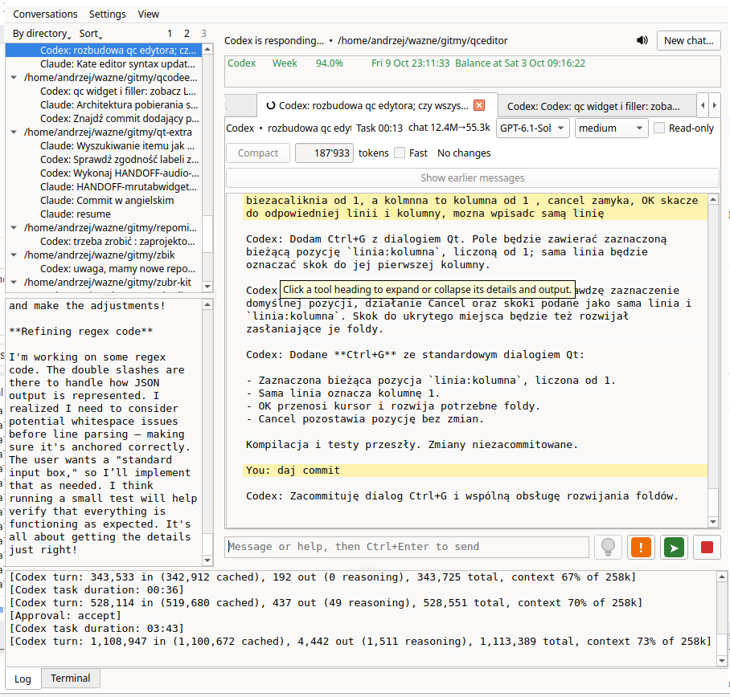

What it does
Many agents, one window
Each chat is a tab with its own working directory. Codex runs through its App Server, Claude Code and GLM through the Claude Agent SDK, Gemini and Antigravity through their CLIs. A tree lists past conversations by directory, ready to be resumed.
Approvals that explain themselves
agentin reads each shell command line as Bash and judges every command in it by what it reads, writes and
runs, and where. Reading and work inside the project run without a question; removals, the network, writes
elsewhere and secret files ask, naming the command and the reason. git push and commands that
change a remote server are always declined.
Rules you can edit
Allow, Ask and Deny lines with * and typed placeholders such as <int> and
<writable>. Choose per command what to remember: once, trusted for the chat, or a rule you
edit before it is saved. Lists of secret files, protected paths and risky variables.
See what a turn changed
A changes window lists the files a turn, the chat or HEAD changed, with unified or side-by-side
diffs, folding and syntax colours from Kate definitions, read with
qcodeedit.
Agents that do not collide
A turn holds its directory and the directories the agent may write to, so two agents never work in the same place at once, across all agentin windows and busy sessions outside it.
Everything around the chat
- a terminal per directory below the chat
- steering a running turn, and reply suggestions
- usage limits with their pace
- sounds and speech when a turn ends or asks
Build and run
agentin runs on Linux. It needs Qt 6 Widgets, CMake 3.24 or newer, a C++20 compiler, libgit2, and qtermwidget for Qt 6 with utf8proc:
# Debian, Ubuntu
sudo apt install qt6-base-dev libgit2-dev libqtermwidget6-2-dev libutf8proc-dev
# Fedora
sudo dnf install qt6-qtbase-devel libgit2-devel qtermwidget-devel utf8proc-devel
# Arch Linux
sudo pacman -S qt6-base libgit2 qtermwidget libutf8procgit clone https://github.com/siplasplas/agentin.git
cd agentin
cmake -S . -B build
cmake --build build
./build/agentin -C /path/to/projectThe first configuration fetches its other libraries from GitHub when they are not installed:
qt-extra, qcodeedit and backward-cpp. Codex needs the codex CLI; Claude Code and GLM need Python 3
with claude-agent-sdk. The README has
the details.
Good to know
Not a sandbox
The approval rules guard against mistakes and make commands visible. Programs of the project run without a question, so a script an agent writes can still do what the rules would ask about.
Your accounts, your settings
agentin starts the agents' own tools with their sign-in and configuration; it keeps its rules and
conversation indexes in ~/.local/share/agentin.
Free software
GPL-3.0-only. Built with Qt 6, qtermwidget, libgit2, qt-extra and qcodeedit.